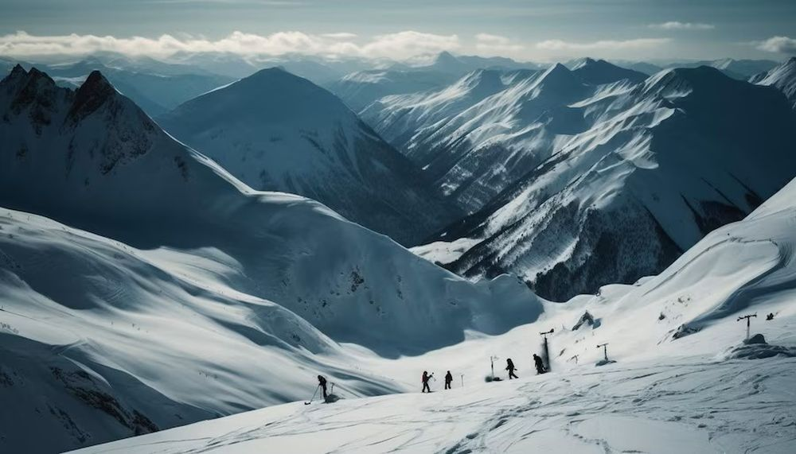

Descoperă Cortina d'Ampezzo - O bijuterie montană în Alpii Dolomiți
Cortina d'Ampezzo este o stațiune montană de prestigiu din Italia, cunoscută pentru peisajele sale alpine și activitățile de recreere:
-

Tre Cime di Lavaredo - Vedere iconică
Trei vârfuri imponente, emblemă a regiunii, oferind priveliști spectaculoase.
-

Telecabina Faloria - Panorame panoramice
O telecabină care oferă vederi uimitoare asupra munților Dolomiți și a văilor.
-

Centrul orașului - Eleganță montană
Orașul în sine oferă arhitectură alpină rafinată, magazine de lux și restaurante fine.
-

Lago di Misurina - Lac alpin
Un lac frumos înconjurat de munți, potrivit pentru plimbări și relaxare.
-

Activități de iarnă - Paradis al schiului
Cortina este cunoscută pentru terenuri excelente de schi și activități montane de iarnă.
Concluzii
Cortina d'Ampezzo oferă o combinație unică de peisaje montane uimitoare și eleganță alpină.